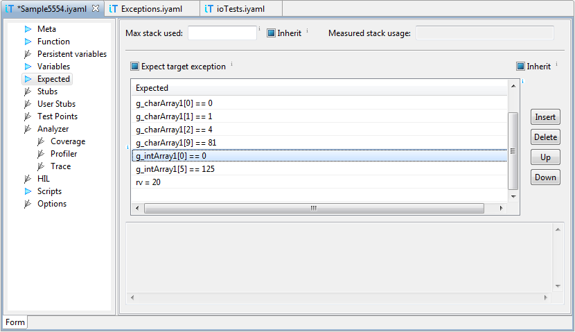

Testing of global variables
Since global variables are always in scope and therefore accessible
to winIDEA evaluator, they can be part of expressions in
Expected table on the Function page. In the example
below variables g_charArray1, and g_intArray1
will be verified after test execution:
